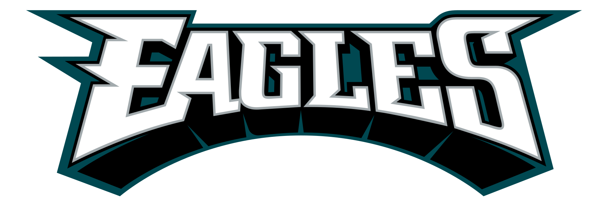
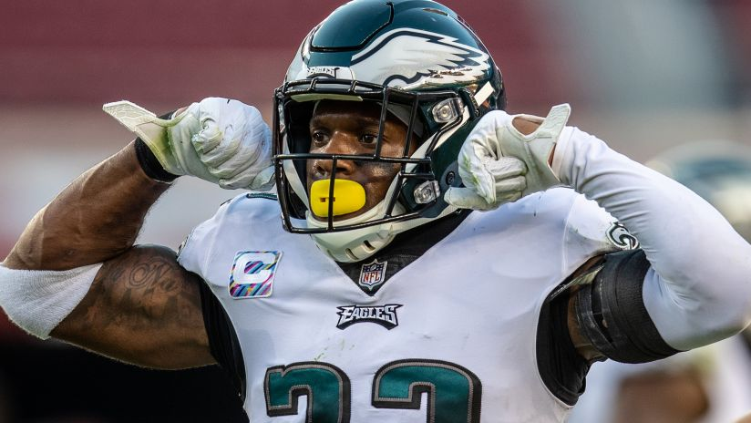
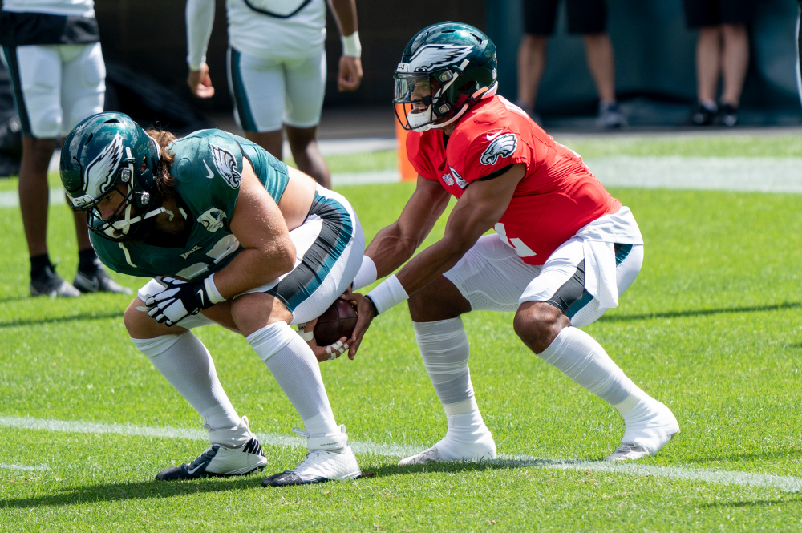
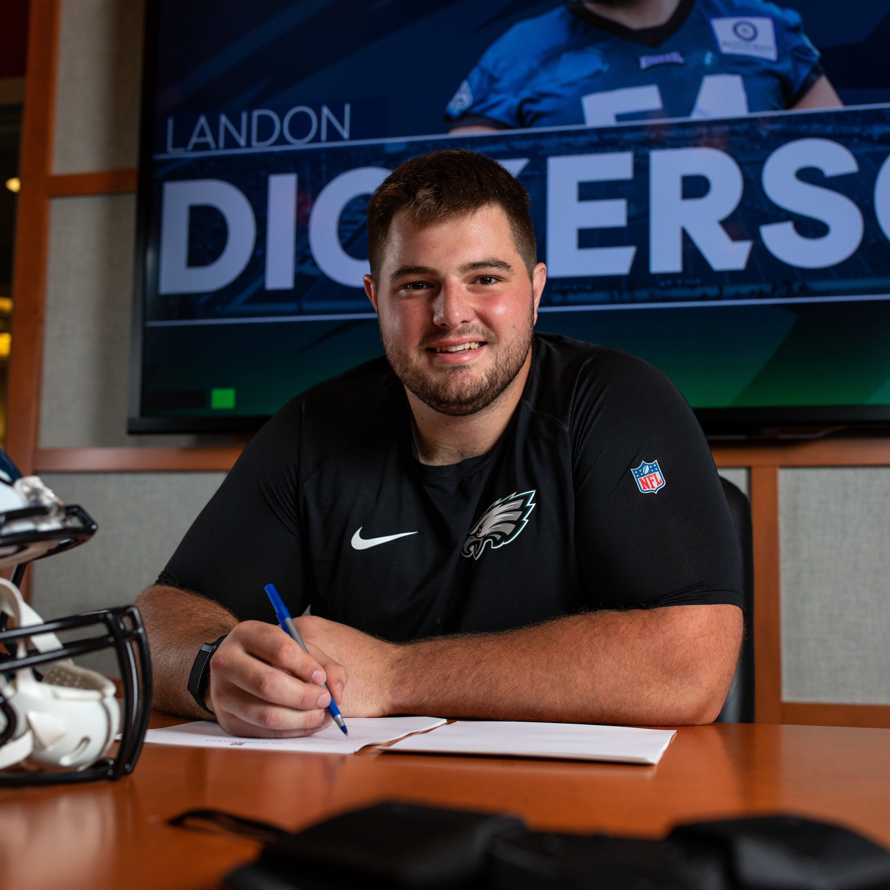
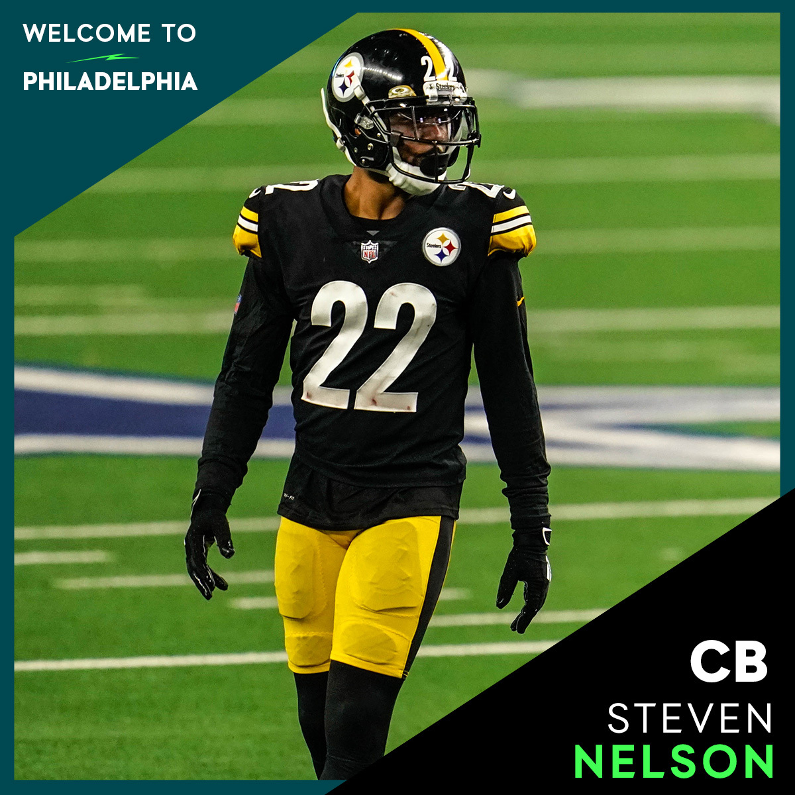

Philadelphia Eagles News

Eagles Place Players on PUP, NFI, and Reserve/COVID-19 Lists

July 28, 2021
The Eagles placed tackle Le'Raven Clark and safety Rodney McLeod on the Active/Physically Unable to Perform list and offensive lineman Landon Dickerson on the Active/Non-Football Injury list on Wednesday to open Training Camp. All three players count against the active roster but can practice once cleared by the team.
The Eagles placed safety Andrew Adams, defensive end Matt Leo, and linebacker Alex Singleton on the Reserve/COVID-19 list Wednesday. The Reserve/COVID-19 list was created for a player(s) who either tests positive for COVID-19 or who has been in close contact with an infected person or persons.
Eagles Report to Training Camp

July 27, 2021
Rookie and veteran Eagles players reported to training camp today! New head coach Nick Sirianni has showed a lot of enthusiasm with the youngest group of players the Eagles have had in years.
Rookie Wide Receiver DeVonta Smith was incredibly excited to work with Jalen Hurts. The two were both on NCAA powerhouse, Alabama, and took the nation by storm back in 2019.
Eagles Sign Rookie OL Landon Dickerson

July 26, 2021
The No. 37 overall pick in the 2021 NFL Draft, Landon Dickerson won the prestigious Rimington Trophy and was voted a unanimous first-team All-American in 2020. He helped lead the Crimson Tide to a National Championship by anchoring an offensive line that provided protection for the top-ranked scoring offense (48.5 points per game) among Power 5 conferences.
Dickerson is the last of nine draft picks to sign his contract. He will likely start the season on the Non-Football Injury List. The Eagles hope to try him out as the heir apparent to Jason Kelce (center)
Eagles Agree to Terms with Free Agent CB Steven Nelson

July 25, 2021
With an opportunity to add experience and competition to a cornerback picture that the team is always looking to develop, the Eagles have agreed to terms on a one-year contract with Steven Nelson, a veteran entering his seventh NFL season who has started 46 games the last three years.
Nelson is expected to compete for playing time opposite Darius Slay, the standout and fearless cover man entering his second season with the Eagles.
Nelson agreed to a one year deal with a $2.5 million base salary, and up to $4.125 million in incentives.